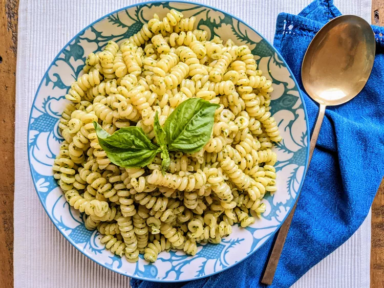

Pesto Pasta

Pesto pasta is easy to make and full of flavor.
It tastes good hot or cold! This top-rated pesto pasta recipe,
which comes together in just 15 minutes, is the perfect quick
and easy weeknight dinner.
Ingredients
- 1 (16 ounce) package pasta
- 2 tablespoons olive oil
- 1/2 cup chopped onion
- 2 1/2 tablespoon pesto
- salt to taste
- ground black pepper to taste
- 2 tablespoons grated Parmesan cheese